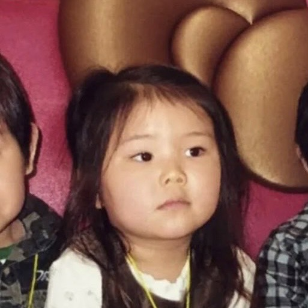
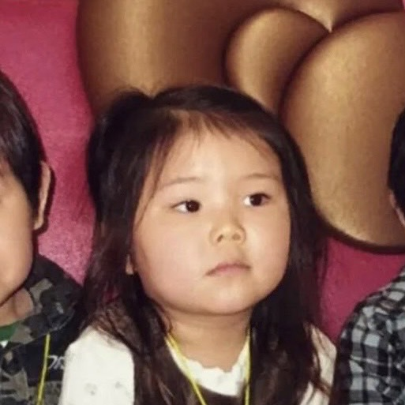

基本データ
詳細
小さい頃どんな子だったか
人見知りでお母さんがいないと泣く子だった！
好きな○○
- 好きな食べ物 卵料理全般
- 好きな場所 カフェ
- 好きな歌手 BlackPink Twice
- 好きな映画 コナン
これまでの人生
| 2003.8.2 | 誕生 |
|---|---|
| 2010-2016 | フラダンスを頑張る | 2016 | 桐蔭学園女子部入学 |
| 2022 | 慶應義塾大学入学 |
人見知りでお母さんがいないと泣く子だった！
| 2003.8.2 | 誕生 |
|---|---|
| 2010-2016 | フラダンスを頑張る | 2016 | 桐蔭学園女子部入学 |
| 2022 | 慶應義塾大学入学 |